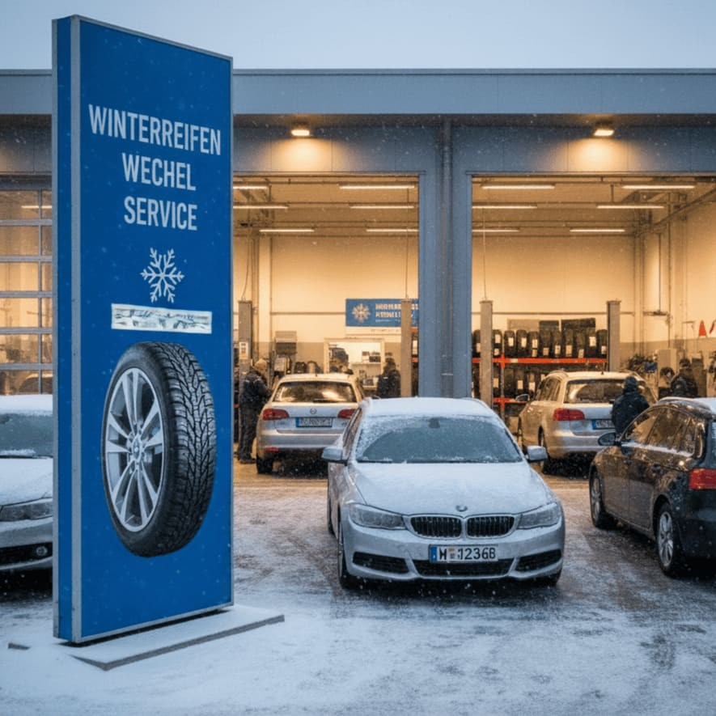

Die O-bis-O-Regel: Ihr Leitfaden für sicheres Fahren
Die goldene Regel für den Reifenwechsel: Von Oktober bis Ostern sollten Winterreifen aufgezogen sein – ob bei Pkw, Nutzfahrzeugen oder Maschinen. Aber warum ist der rechtzeitige Wechsel so wichtig, und was müssen Sie beachten? Bei CB Handels GmbH beraten wir Sie kompetent und ehrlich zu allen Fragen rund um Reifen und Sicherheit.
Warum sind Winterreifen wichtig?
Bei Temperaturen unter 7°C bieten Winterreifen deutlich bessere Fahreigenschaften:
- Kürzerer Bremsweg: Bis zu 50% kürzer auf verschneiter Fahrbahn
- Bessere Traktion: Spezielles Gummimischung bleibt bei Kälte flexibel
- Mehr Sicherheit: Tiefere Profilrillen für besseren Wasserabfluss
Die Gesetzeslage in Österreich
Situative Winterreifenpflicht vom 1. November bis 15. April:
Wann ist der richtige Zeitpunkt?
Herbst (Oktober)
Jetzt wechseln: Temperaturen sinken unter 7°C, erste Nachtfröste, Laub auf Straßen
Frühjahr (nach Ostern)
Zurück zu Sommerreifen: Keine Nachtfröste mehr, Temperaturen stabil über 7°C, nach "Eisheiligen" (Mitte Mai)
Reifencheck: Darauf sollten Sie achten
1. Profiltiefe messen
Mindesttiefe: 4 mm (Winter) / 1,6 mm (Sommer)
Empfohlen: 6 mm (Winter) / 3 mm (Sommer)
Test mit 2-Euro-Münze: Der silberne Rand (4 mm) sollte nicht sichtbar sein.
2. Alter prüfen
DOT-Nummer an der Reifenflanke (z.B. 2 518 = 25. Woche 2018)
Reifen älter als 8 Jahre sollten ersetzt werden
3. Beschädigungen checken
Risse, Beulen, Schnitte, ungleichmäßiger Abrieb
DIY oder Werkstatt?
Selbst wechseln: Kostenersparnis, aber erfordert Werkzeug und Knowhow
Professioneller Wechsel: Kosten € 30-60 (ohne Einlagerung)
Bei CB Handels GmbH
Reifenwechsel inkl. Auswuchten
Professioneller Sicherheitscheck
Einlagerung der Saisonreifen
RDKS-Kontrolle
Preis: Ab € 49,- (inkl. Auswuchten)
Reifen richtig lagern
Reifen mit Felgen: Stapeln oder an Wand hängen, Reifendruck um 0,5 bar erhöhen
Reifen ohne Felgen: Nur stehend lagern, regelmäßig drehen
Ideale Bedingungen: 10-25°C, 50-80% Luftfeuchtigkeit, dunkel und trocken
Häufige Fragen
Q: Kann ich mit Winterreifen auch im Sommer fahren?
A: Möglich, aber nicht empfohlen. Winterreifen verschleißen schneller bei Wärme.
Q: Was sind Ganzjahresreifen?
A: Kompromiss zwischen Sommer- und Winterreifen. Akzeptabel für milde Winter, nicht optimal für extreme Verhältnisse.
Q: Muss ich alle 4 Reifen gleichzeitig wechseln?
A: Empfohlen! Bei Allradfahrzeugen sogar Pflicht.
Unser Service für Sie – Qualität und Transparenz
Bei CB Handels GmbH in Reichenfels sind Sie in besten Händen. Wir stehen für Qualität, Transparenz und erstklassigen Service – nicht nur beim Fahrzeugkauf, sondern auch bei der Wartung und Pflege Ihrer Fahrzeuge und Maschinen.
Reifenservice mit Qualitätsgarantie: Professioneller Reifenwechsel inkl. Auswuchten, sorgfältiger Sicherheitscheck, kostenlose Sichtprüfung. Service für Pkw, Nutzfahrzeuge und Maschinen. Transparente Preise.
Einlagerung – fachgerecht und sicher: Klimatisierte Lagerräume, fachgerechte Lagerung, jährlicher Zustandscheck. Langfristige Partnerschaft.
Reifenverkauf – kompetente Beratung: Große Auswahl, ehrliche Beratung, individuelle Empfehlungen, faire Preise. Montage am gleichen Tag möglich.
Bei CB Handels sind Sie nicht nur Kunde – Sie sind unser Partner. Wir sind auch nach dem Kauf für Sie da.
Jetzt Termin vereinbaren!
Kommen Sie vor dem ersten Schnee zu uns! Unser Team berät Sie kompetent und ehrlich zu allen Fragen rund um Reifenwechsel, Einlagerung und Reifenkauf – für Pkw, Nutzfahrzeuge und Maschinen. Bei CB Handels finden Sie einen Partner, der auch nach dem Kauf für Sie da ist.
Telefon: +43 664 3882323
E-Mail: cbhandel.at@gmail.com
Auenfischerstraße 53a, 9400 Reichenfels
Weitere Artikel: